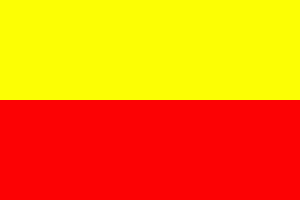

Semantic Kannada Parser
Sentences
1.ಅವಳು ಮನೆಗೆ ಹೋಗುವಳು
2.ರಾಮನು ಹಣ್ಣನ್ನು ತಿಂದನು
3.ರಾಮನು ಹಣ್ಣುಗಳನ್ನು ತಿಂದುಹಾಕಿಬಿಡುತ್ತಾನಾ?
4.ಅವನು ನನಗೆ ದುಡ್ಡು ಕೊಡಬೇಕು
5.ಅವನು ನನಗೆ ದುಡ್ಡು ಕೊಡಲಿಲ್ಲ
6.ಅಮ್ಮ ಯಾರಿಗೆ ಮೊದಲು ದೋಸೆ ಕೊಡುತ್ತಾಳೆ?
7.ಕೆಟ್ಟ ಪುಸ್ತಕಗಳನ್ನು ಓದಬಾರದು
8.ಮರದಿಂದ ಹಣ್ಣು ಕೆಳಕ್ಕೆ ಬಿದ್ದಿತು
9.ಕೆಲವರು ಮನೆಯಿಂದ ಮನೆಗೆ ಅಲೆಯುತ್ತಾರೆ
10.ಹುಡುಗರು ಬಾವಿಯಲ್ಲಿ ಇಣಕಿದರು
11.ಸಂಜೆ ಹೋಗೋಣ
12.ಹುಡುಗರು ಸೀಬೆ ಹಣ್ಣುಗಳನ್ನು ಬೇಗ ಬೇಗ ತಿಂದರು
13.ಹುಡುಗರು ಹಣ್ಣು ತಿಂದು ಮನೆಗೆ ಹೋದರು
14.ಹುಡುಗರು ಹಣ್ಣು ತಿನ್ನುತ್ತಾ ಮನೆಗೆ ಹೋದರು
15.ಹುಡುಗರು ಹಣ್ಣು ತಿಂದು ಮನೆಗೆ ಹೋಗಿ ಮುಖ ತೊಳೆದುಕೊಂಡು ಆಟಕ್ಕೆ ಓಡಿದರು
16.ಹುಡುಗನು ತೋಟಕ್ಕೆ ಹೋಗಿದ್ದಾನೆ
17.ಸೊಳ್ಳೆ ಕಚ್ಚಿದರೆ ಮಲೇರಿಯ ಬರುವುದಂತೆ
18.ನೀನು ಬರುವಷ್ಟರಲ್ಲಿ ನಾನು ಬಂದಿರುತ್ತೇನೆ
19.ಪ್ರಜೆಗಳು ರಾಜನಲ್ಲಿ ಬೇಡಿಕೊಂಡರು
20.ಹಾವು ಕಚ್ಚಿ ಹುಡುಗ ಸತ್ತನು
| Kartha(ಕರ್ತೃ) |
| Karma(ಕರ್ಮ) |
| KaraNa(ಕರಣ) |
| Sampradana(ಸಂಪ್ರದಾನ) |
| Apadana(ಅಪಾದಾನ) |
| AdhikaraNa(ಅಧಿಕರಣ) |
| Destination |
